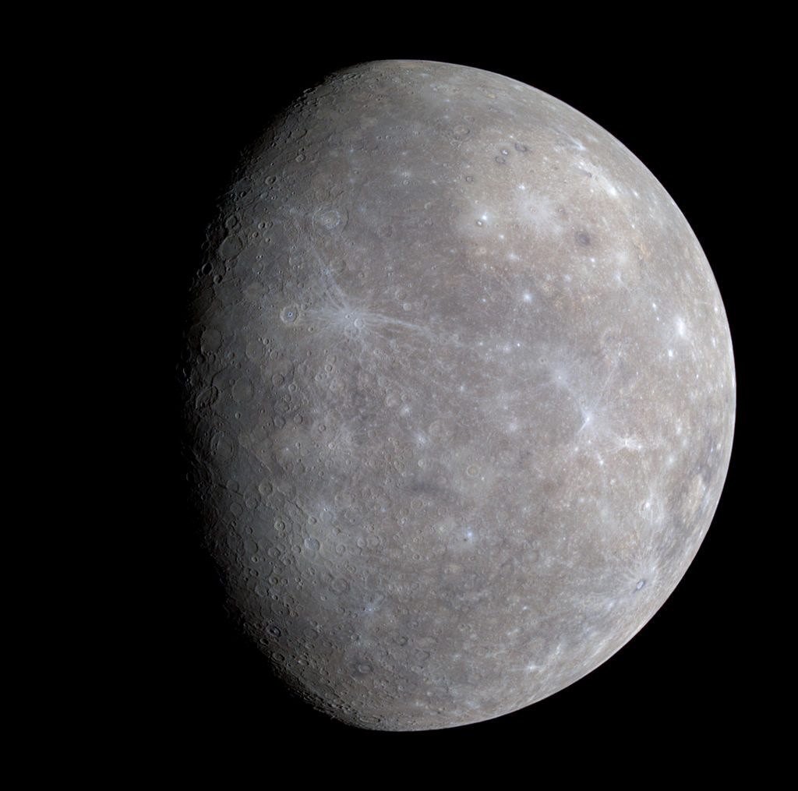

Меркурій
Меркурій - найменша планета Сонячної системи і найближча до Сонця. Названа на честь давньоримського бога торгівлі — швидкого Меркурія, оскільки вона рухається небом швидше за інші планети. Її період обертання навколо Сонця складає всього 87,97 земних діб - найкоротший серед усіх планет Сонячної системи.
Відстань Меркурія від Сонця, якщо дивитись з Землі, ніколи не перевищує 28°. Ця близькість до Сонця означає, що планету можна побачити лише протягом невеликого часу після заходу або до сходу сонця, зазвичай, у сутінках. У телескоп у Меркурія можна побачити фази, що змінюються від тонкого серпа до майже повного диска, як Венери і Місяця, інколи ж він проходить диском Сонця. Період зміни фаз Меркурія дорівнює синодичного періоду його обігу - приблизно 116 днів.
Астрономічні характеристики
Середня відстань Меркурія від Сонця трохи менша за 58 млн км (57,91 млн км). Планета звертається навколо Сонця за 88 земних діб. Видима зоряна величина Меркурія коливається від −2,43[2] до 5,5 при нижньому і верхньому з'єднанні, та його нелегко помітити через близькість до Сонця.
Меркурій належить до планет земної групи. За своїми фізичними характеристиками він нагадує Місяць. Він не має природних супутників, але є дуже розріджена атмосфера. Планета має велике залізне ядро, що є джерелом магнітного поля, напруженість якого становить 0,01 від земного магнітного поля. Ядро Меркурія складає 83% всього обсягу планети. Температура поверхні Меркурія коливається від 80 до 700 До (від −190 до +430 °C). Сонячна сторона нагрівається набагато більше, ніж полярні області та зворотний бік планети.

Дослідження Меркурія
Меркурій відвідали два космічні апарати: у 1974 та 1975 роках поряд з ним пролетів «Марінер-10», а з 2008 до 2015 року його досліджував MESSENGER. Останній у 2011 році вийшов на орбіту навколо планети і, зробивши за чотири роки понад 4000 витків навколо неї, 30 квітня 2015 року витратив паливо та врізався у поверхню. Планується, що 2025 року до Меркурія прибуде космічний апарат BepiColombo.
Радіус Меркурія складає всього 2439,7 ± 1,0 км, що менше за радіус супутника Юпітера Ганімеда і супутника Сатурна Титана (двох найбільших супутників планет у Сонячній системі). Але незважаючи на менший радіус, Меркурій перевершує Ганімед і Титан разом узяті за масою. Маса планети дорівнює 3,3⋅1023 кг. Середня щільність Меркурія досить велика - 5,43 г/см3, що лише трохи менше щільності Землі. Враховуючи, що Земля набагато більше за розмірами, значення щільності Меркурія вказує на підвищений вміст його надрах металів. Прискорення вільного падіння Меркурії дорівнює 3,70 м/с2. Друга космічна швидкість – 4,25 км/с. Про планету поки що відомо порівняно небагато. Тільки в 2009 році вчені склали першу повну карту Меркурія, використовуючи знімки апаратів "Марінер-10" та "Месенджер".

Теорія виникнення
Основною гіпотезою появи Меркурія та інших планет є небулярна гіпотеза. З ХІХ століття існує гіпотеза, що Меркурій у минулому був супутником планети Венери, а згодом був «втрачений». В 1976 Том ван Фландерн і К. Р. Харрінгтон на підставі математичних розрахунків показали, що ця гіпотеза добре пояснює велику витягнутість (ексцентриситет) орбіти Меркурія, його резонансний характер звернення навколо Сонця і втрату обертального моменту як у Меркурія, так і у Венери у останньої також - придбання обертання, зворотного звичайному в Сонячній системі). Згідно з іншою моделлю, на зорі формування Сонячної системи прото-Меркурій майже по дотичній зіткнувся з прото-Венерою, внаслідок чого значні частини мантії та кори раннього Меркурія були розсіяні в навколишній простір і потім зібрані Венерою.